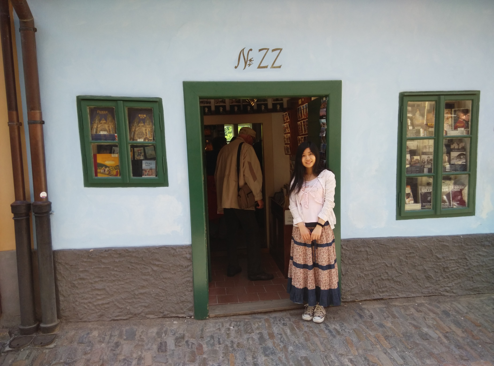
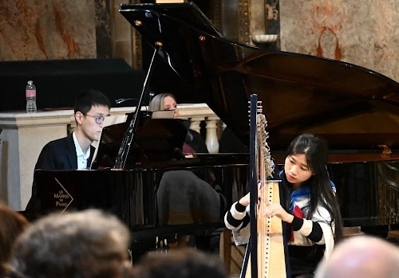
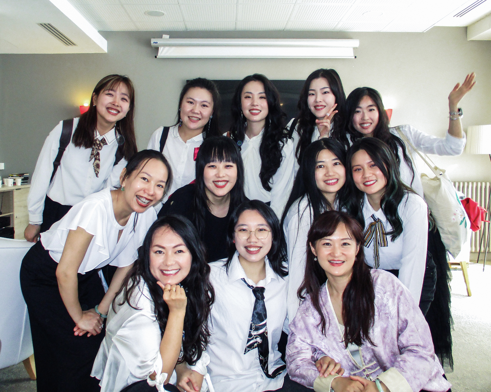
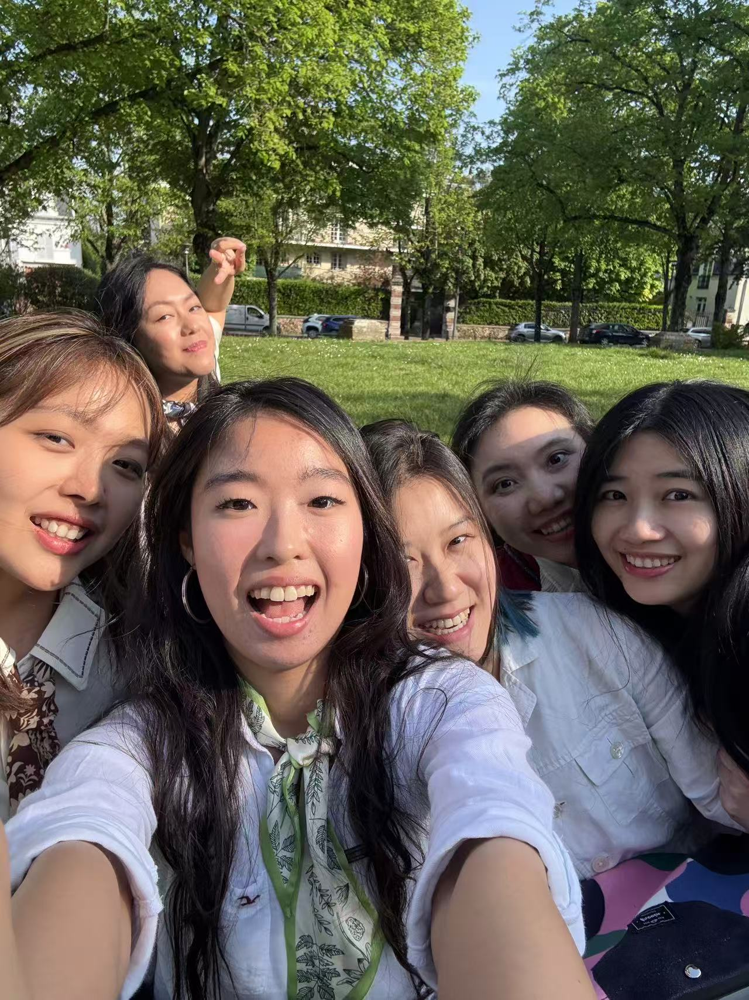
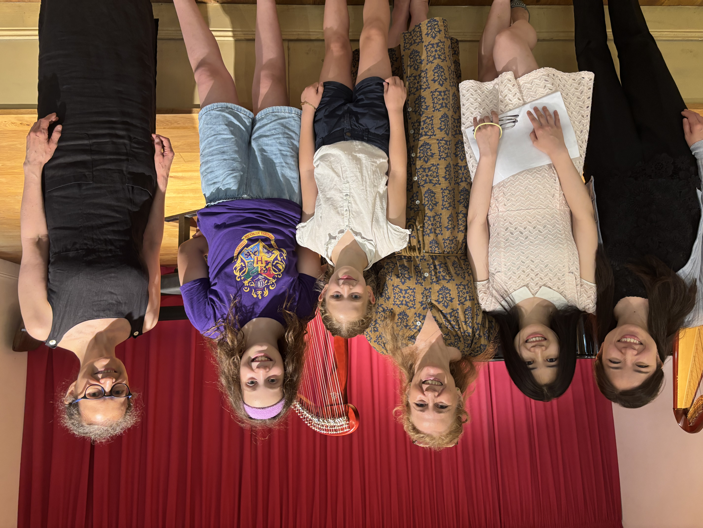

SALON — 客厅
我的精神原型
每个创作者都有一座内心的殿堂，里面住着那些点亮过自己的人。
他们是我的灵感之源，我的地图，我的路标。


SALON — 客厅
每个创作者都有一座内心的殿堂，里面住着那些点亮过自己的人。
他们是我的灵感之源，我的地图，我的路标。
SALLE DE CONCERT — 音乐厅
竖琴是成年后圆下的童年梦想。 古典、凯尔特、爵士、民谣—— 我不是在选择风格，而是在寻找可能性。
COMPOSITIONS ORIGINALES — 原创作品
那些透过我被表达的声音。
STUDIO DE DANSE — 舞房
从中国古典舞到芭蕾，从拉丁到当代身体剧场——舞蹈是我最古老的语言。
BIBLIOTHÈQUE — 书房
阅读是我最隐秘的野心。 有些书改变观点。 有些书改变命运。 我记录的不是摘要， 是我在阅读时，内心悄悄发生的偏移。
NOTE 01
《创意工作流》
关于创意流动的艺术——让灵感变成作品的完整旅程
↗NOTE 02
《打造第二大脑》
Building a Second Brain — 知识管理的系统与方法
↗NOTE 03
《福格微习惯》
Tiny Habits — 用微小行动撬动人生的杠杆
↗NOTE 04
《Big Magic》
Elizabeth Gilbert 的创意宣言——用勇气拥抱内心的创造力
↗NOTE 05
《12周一年》
The 12 Week Year — 12周的高效执行迭代系统
↗NOTE 06
《反倦怠能量站》
在持续创作与生活的张力中，寻找可持续的能量之源
↗NOTE 07
《练习之道》
The Art of Practice — 精通的本质，关于深度练习的哲学
↗NOTE 08
《The magic of momentum》
每个人的首要目标都应该是在自己看重的领域创造正向的动量
↗MUSÉE DE MÉMOIRE — 记忆博物馆
从汨罗到巴黎，从舞蹈到竖琴，从科技研发到艺术创作——
我是所有这些时刻的总和。


NAISSANCE · 诞生
1992年，湖南汨罗。一个女孩降临，带着广阔的可能性，用那双黑葡萄般的眼睛，打量这陌生的世界。
ENFANCE · 童年初章
手握苹果，睥睨人间。
 3岁 · 1995
3岁 · 1995
 5岁 · 1997
5岁 · 1997
FAMILLE · 根
从前的世界很小，家就是全部。
 6岁 · 1998
6岁 · 1998
STYLE · 自我初现
第一次去影楼穿公主裙拍艺术照，那时多希望自己有长头发。
 7岁 · 1999
7岁 · 1999
LECTURE · 外婆家的阳台
阅读是最早的秘密冒险。
 8岁 · 2000
8岁 · 2000
还珠格格风靡的年代
那时最大的遗憾，就是没有长头发。
 10岁 · 2002
10岁 · 2002
AMITIÉ · 友谊
那时学习成绩很好，参加语文数学竞赛接连拿奖，音乐课当领唱，儿童节跳领舞，开始享受在人群里自信闪耀的感觉。
 9岁 · 2001
9岁 · 2001
JEUNESSE · 少女
影楼做活动，很便宜就可以拍一套艺术照，但需要自备服装。妈妈带我去依依家借衣服。依依妈妈说，这条灰裙子虽然看着普普通通，拍出来很好看的。后来我无数次在这张照片的黑色背景上画出长头发的轮廓，幻想那个美丽的我。
终于离开汨罗，考到长沙读高中，离原生家庭的喧嚣远一点，享受与其他小孩平等的尊严。
 15岁 · 2007
15岁 · 2007
ADOLESCENCE · 少女初期
14到15岁那一年我经历了很多。父母离异，居无定所，骑单车上学被十字路口超速行驶的货车撞飞。有很多个深夜痛哭的夜晚，我不明白为什么是我要经历这些，为什么不能像别人家的小孩可以快乐成长被父母宠爱。但还好我有自由和选择权，中考完自己坐车来长沙参加周南中学春蕾班的招生考试，被美丽的校园惊艳，许愿能在这里度过三年。
 15岁 · 2007
15岁 · 2007
ADOLESCENCE · 高中时光
选择就读全女班级是我有意为之。物质层面上，周南春蕾班学费全免，能大大减轻家庭负担。精神层面上，可以有效预防早恋。那时的我太脆弱了，任谁给我一点点甜都有沦陷的风险。在中文系舅舅的悉心培养下，那时我已阅读大量的文学，深知“女之耽兮不可脱也”。把自己部署进女生班，是我蓝图上的绝妙安全牌。
 16岁 · 2008
16岁 · 2008
ADOLESCENCE · 高二
高二的国庆节假期，窝在空教室里，用这难得的空闲读刘心武揭秘红楼梦。争分夺秒的紧迫感仿佛是从中学时开始伴随我的，从此再没能挣脱。
 17岁 · 2009
17岁 · 2009
天才班的周末
从高二上学期开始，学校为理科月考成绩年级稳定在前40名的学生，成立了天才班，提供最好的教学资源，助力冲刺名校。离开春蕾班的温馨环境，起初我很难适应天才班的高压日常和周围的陌生面孔。每个人都在担心，哪天会被天才班踢出去，全班集体患上冒充者综合症。
我需要在安静的环境学习，于是在学校旁的小超市买了张蓝色塑料板凳，带着它行走四方。偌大的校园总有安静一隅，那是我的移动自习室。


TRANSITION · 成人进行式
高考完老师带大家一起去橘子洲头玩。我坐在闺蜜身边的草地上，感到放松而安全。我的安全感是这所学校，这个班级，身边这些天才同学带给我的。后来去远方读大学，无数次想念高中的人和事。一切都回不去了。我只能不停歇地，奔赴更远的他乡。


西安电子科技大学
告别中学时代，重新开始跳舞，因为会跳舞被人记住。在这所理工院校的舞蹈队交了很多好朋友，成为我后来多年的精神支柱。

寒假跟家人去旅行
用身体去感受文化，是最早的田野调查。


精力腾飞
白天法语课，晚上熬夜做数学建模，在课程的间隙里跟班里最欣赏的学霸同学合作，推进国家大学生创新实验项目申请专利，也为我后来对机器人的热爱奠定了基础。


新大陆
如愿被法国的dream school录取，仿佛自己是励志剧的女主角。新生活的幕布缓缓拉开，Brest成为我的第二故乡。

TRANSITION · 大学毕业
暑假回国，辗转去很多地方旅行，可能是为了逃避回家。



AVENTURE · 年轻的冒险
从巴塞罗那的海边，到捷克的CK小镇，法国的度假文化开始一点点渗入我的血液。
 24岁 · 2016
24岁 · 2016
GRADUATION · 毕业
二十四岁，在毕业实习的间隙去克罗地亚参加创新研究项目，完结最后的学生时代。
进入职场，巴黎成为新的舞台。
 25岁 · 2017
25岁 · 2017
PARIS · 巴黎银行数据科学家
加入年轻活力的团队，钻研前沿的算法科技，推公式写代码，活跃于各大技术论坛和学术顶会，我好奇那些行业内最顶尖的大脑，都在思考些什么。


PARIS · 塞纳河的风
铁腕和奔波为自己争取来的安定感。


探索与绽放
当生活安定下来，终于可以卸下理工女的外壳，回归真实的我。对世界好奇，从细节中捕捉诗意和美感，切身体验令我神往多年的学科。
 28岁 · 2020
28岁 · 2020
内观元年
巴黎是我的梦之都，在这里实现了数不清的童年愿景。跳足尖芭蕾，单人拉丁舞，学音乐剧表演，学时装设计，上珠宝设计课，学创意写作，弹竖琴，参加音乐或舞蹈夏令营，跟随role model贴身学习。2020年是我的内观禅修元年，自此我的内核开始以全新的方式演变。
 29岁 · 2021
29岁 · 2021
求知若渴
内观禅修让身心净化和敞开后，与一些书籍的相遇让我从此成为方法论狂人。此前听崇拜的role model分享知识，常感叹他们是从哪里学来的广袤深邃。直到我开始精读高质量的方法论书籍，通过最强大脑作者们的互相引用，解锁更多好书，一点点拓宽认知的边界，仿佛从此收获了打开智慧大门的钥匙。

向前一步
疫情期间把阅读方法论学来的时间管理大法应用在生活里，刷完了大量线上课程、算法题和更多方法论书籍，打造硬核实力。高强度参加The Connection Institute的线上circling，与不同国家的伙伴一起慢节奏修习内在觉察和深度关系，这个过程打破了我自从2013年来以外国人身份自处的表达屏障，我开始切身体会不同人种内心深处相通的需求，开始有勇气表达自己看似微不足道的想法和感受，释放那些隐秘的共鸣。


是行动派也是艺术家
2月参加Cours Florent的音乐创作冬令营，从此开启创作生涯。5月回国周游列省。 6月进入喜欢的工作环境，终于在职场中绽放全然真实的自我。



Resilience
年初妈妈又一次被诈骗，让我跌入了至暗时刻。原以为我早已挣脱了原生家庭的桎梏，以为自己禅修多年已经变得足够强大豁达。当考验来临时，童年那久远而熟悉的绝望感，依然密不透风将我包围。于是再度诉诸于各类疗愈大法，把创伤外包出去。3月开始严格践行柳比歇夫时间统计法，喜欢一切都有章可循有法可依的感觉。去德国梅村EIAB参加Wake Up Your Artist艺术禅修营，去伦敦参加Elizabeth Gilbert的BIG MAGIC CREATIVITY & LIBERATION WORKSHOP。在长时间繁忙而理性的研发工作之后，内在的艺术家终于有了生长空间。在breathwork中经历了前所未有的升维体验。7月在Dinan探索到属于我的音乐风格，生命在跋涉中一点点变清晰了。2024年12月13日晚，由我独立撰稿的合唱剧首次公演。未来还会有很多个从无到有的创作。我享受这个把遥不可及的梦变成实景的过程，仿佛真正拥有仙女棒。


音乐学院元年
可能因为生活圈子日益极简，音乐成为我生命中最重要的板块。1月投入大量精力研读音乐剧理论，2月参加accordissimo古典乐冬令营第一次在交响乐团里弹竖琴。因为在室内乐排练的过程中被激励而刻意练习视奏。4月初学架子鼓和顫音琴，开启新宇宙。接连参加3个高强度竖琴夏令营，因为被Geneviève Létang打击而陷入迷茫。8月跟随我的role model Kaori Ito 学习即兴舞蹈，恨不得从此追随她去Strasbourg每天跳舞。10月跟随Tiphaine学习我最爱的曲子，简直心想事成，原来我已经拥有了快速练好一首新曲目的能力。限制性信念在脱落，开始相信即便没有童子功，我的竖琴技术也可以练出来专业的水准。为了早日抵达这个目标，同时入学爵士和古典两个音乐学院（IMEP和Schola Cantorum），把工作日夜晚的时间填的满满当当。11月在Max Richter的音乐会后大受触动，几乎看到了我理想作品的模样。因为Raoul Moretti的激励，着手申请ircam电子作曲的项目，仿佛那是我转型成为职业音乐人的起点。



唱跳起点
每周的竖琴和架子鼓课宛若悬在心上的达摩克利斯之剑，时刻督促我练琴练鼓。比起音乐学习大规模的课后作业，舞蹈要轻松得多，只要保证自己在上课时间装备齐全抵达舞房即可，其它的都交给老师和课程环境。我重新发掘了百老汇爵士这一最爱的舞种，感到内在的一部分自我。
故事未完，
最好的章节，还在路上。
JOURNAL — 日志
思想在流动。它们需要被记录，被思考，被分享。
这里是我的想法的家园——关于音乐、舞蹈、代码、生活和所有在两者之间的东西。

HE Mina · Paris · 2024
À PROPOS — 关于我
在巴黎，我活在两个平行的宇宙里。白天，我是 Société Générale 的首席数据科学家，用算法和代码理解金融世界的语言；夜晚与周末，我是竖琴的学徒、舞台上的舞者、歌词本上的诗人。
我相信，技术与艺术从来不是对立的——它们都是人类试图理解与表达世界的方式。一个追求极致的算法，和一段打动人心的旋律，有着相同的灵魂。
竖琴是我的主要语言。我学习古典、凯尔特、巴洛克、爵士即兴，参与竖琴治疗项目（IHTP），师从 Alexander Boldachev、Geneviève Létang 等大师。同时我写作、作曲、演唱，在 Église Saint-Merry 和芝加哥大学巴黎中心呈现我的创意喜剧作品。
舞蹈陪伴了我整个成长。从汨罗的校园舞台到巴黎的芭蕾课室，从拉丁舞表演到与 Kaori Ito 探索身体与日本精神性的交汇——我用身体记忆那些文字无法言说的事物。
音乐 MUSIC
舞蹈 DANCE
语言 LANGUAGES